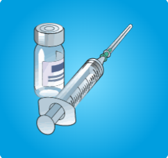
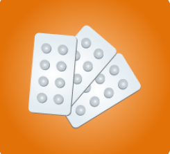
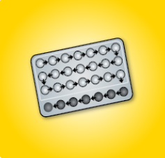
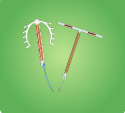
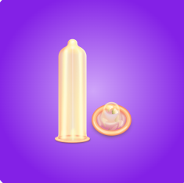
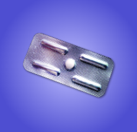
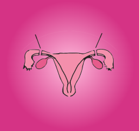
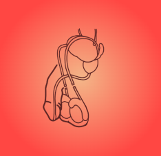

गर्भनिरोधक साधन दो प्रकार के होते हैं - अस्थाई व स्थाई।
अस्थाई साधन वो हैं जिनका इस्तेमाल बंद करने पर माँ बनने की क्षमता लौट आती है | इन्हें पहले बच्चे में देरी या दो बच्चों के बीच अंतर रखने के लिए या अगर आगे बच्चे नहीं चाहियें तब इनका इस्तेमाल किया जा सकता है। सभी सरकारी स्वास्थय केन्द्रों पर उपलब्ध अस्थाई साधन हैं - अंतरा सुई, छाया गोली, माला-एन गोली, आईयूसीडी, कंडोम (निरोध) और ईज़ी गोली (आपातकालीन गोली)|
स्थाई साधन वो हैं जिनका परिवर्तन होना मुमकिन नहीं है | यदि दंपति निश्चित रूप से भविष्य में बच्चे नहीं चाहते हैं, तो महिला या पुरुष नसबंदी ऑपरेशन करवा सकते हैं|
यदि कोई दंपति गर्भनिरोधक साधनों का इस्तेमाल नहीं कर रहे हो या उसके इस्तेमाल में कोई भूल हो जाए और असुरक्षित शारीरिक संबंध बन जाता है, तो महिला 72 घंटों के अंदर ईज़ी गोली (आपातकालीन गोली) ले सकती है। लेकिन यह गर्भनिरोध का सामान्य तरीका नहीं है, और इसका नियमित उपयोग नहीं करना चाहिए।
अंतरा सुई (तिमाही) [अस्थाई]
➜ यह एक हॉर्मोन युक्त गर्भनिरोधक साधन है जो सुई द्वारा महिला को दिया जाता है।
➜ यह बहुत असरदार और सुरक्षित है।
यह कैसे दी जाती है?
- ➜ यह सुई हर तीन महीने में लगाई जाती है।
कब लगवाई जा सकती है?
- ➜पहली सुई माहवारी शुरु होने के 7 दिनों के अंदर लगवा सकते हैं।
- ➜ प्रसव या गर्भपात हुआ हो, तो सेवा प्रदाता की सलाह के अनुसार लगवा सकते हैं।
लाभ:
- ➜ यह गर्भनिरोध के अतिरिक्त, माहवारी से पहले व माहवारी के दौरान होने वाले दर्द को कम करती है।
- ➜ गर्भाशय एवं अण्डाशय के कैंसर की संभावना से सुरक्षा प्रदान करती है।
- ➜ स्तन की बीमारियों व गर्भाशय के ट्यूमर से बचाव करती है।
साइड इफेक्टः
- ➜ कुछ महिलाओं को कुछ समय के लिए जी मिचलाना, दाग लगना व सिर दर्द हो सकता है जो कि अस्थाई है।
- ➜ यदि यह परेशानी ज़्यादा या लंबे समय तक हो, तो अपने नजदीकी स्वास्थ्य केंद्र में संपर्क करें।
- ➜ कुछ महिलाओं में इससे माहवारी आनी बन्द हो जाती है तथा कुछ में अनियमित हो जाती है। यह प्रभाव अस्थाई होता है तथा सुई बंद करने पर ठीक हो जाता है।
- ध्यान दें: अंतरा सुई की आख़िरी डोज़ के बाद प्रजनन क्षमता लौटने में 7-10 महीने लग सकते हैं।
उपलब्धताः
- ➜ यह सभी सरकारी स्वास्थ्य केंद्रों पर मुफ़्त में लगाई जाती है|
- ➜ प्राइवेट स्वास्थ्य केंद्रों पर इसे पैसे देकर लगवाया जा सकता है।


छाया गोली (साप्ताहिक गोली) [अस्थाई]
➜यह सुरक्षित व प्रभावी हॉर्मोन रहित गर्भनिरोधक गोली है जिन्हें महिलाओं द्वारा लिया जाता है।
कब ली जा सकती है?
- ➜ इसे माहवारी शुरु होने के पहले दिन या प्रसव के तुरंत बाद शुरु कर सकते हैं|
- ➜ गर्भपात हुआ हो, तो सेवा प्रदाता की सलाह से शुरु कर सकते हैं।
इसका उपयोग कैसे करें?
- ➜ पहले तीन महीने में यह सप्ताह में 2 बार निर्धारित किए गए दिनों पर ली जाती है। तीन माह पश्चात् यह सप्ताह में एक बार निर्धारित दिन पर ली जाती है।
अगर गोली लेना भूल जाएं तो?
- ➜ यदि सप्ताह में एक गोली लेना भूल जाएं तो कंडोम का इस्तेमाल करें और याद आते ही गोली ले लें। अगली गोली निर्धारित समय पर ही लें।
- ➜ यदि दो गोली लेना भूल जायें तो तुरंत सेवा प्रदाता से मिलें।
साइड इफेक्टः
- ➜ माहवारी कुछ देरी से आना व माहवारी में रक्तस्राव कम होना जोकि महिला के लिए लाभदायक ही हैं|
उपलब्धताः
- ➜ यह सभी सरकारी स्वास्थ्य केंद्रों पर मुफ़्त में उपलब्ध है|
- ➜ प्राइवेट स्वास्थ्य केंद्रों व दवा की दुकानों/ केमिस्ट पर इसे पैसे देकर लिया जा सकता है।
- ➜ यह अलग-अलग ब्रांड के नाम से मिलती है।

माला-एन गोली (रोज़ाना खाने वाली गोली) [अस्थाई]
➜ यह सुरक्षित व प्रभावी हॉर्मोन युक्त गर्भनिरोधक गोली है जिन्हें महिलाओं द्वारा लिया जाता है।
➜ एक पैकेट में 28 गोलियाँ होती हैं। इनमें से 21 सफेद गोलियाँ हॉर्मोन की हैं और 7 काली गोलियाँ आयरन की होती हैं।
➜ प्रत्येक दिन निर्धारित समय पर एक गोली लेनी होती है।
इनका उपयोग कैसे करें?
- ➜ इसे माहवारी शुरु होने के पहले दिन से पाँच दिन में शुरु कर सकते हैं|
- ➜ गर्भपात या प्रसव हुआ हो, तो सेवा प्रदाता की सलाह से शुरु कर सकते हैं।
- ➜ गोलियाँ पैकेट पर दिए गए तीर के निशान के अनुसार शुरू से इस्तेमाल करें।
- ➜ एक पैकेट खत्म होने के बाद अगले दिन से ही दूसरा पैकेट शुरू करें।
लाभः
- ➜ मासिक से पहले व मासिक के दौरान होने वाले दर्द को कम करती है।
- ➜ मासिक के दौरान अधिक रक्तस्त्राव हो तो उसे कम करती है।
- ➜ अनियमित माहवारी चक्र को नियमित करती है।
साइड इफेक्टः
- ➜ कुछ महिलाओं को शुरु में जी मिचलाना, दाग लगना व सिर दर्द हो सकता है जो कि अस्थाई है।
- ➜ यदि यह परेशानी ज्यादा या लंबे समय तक हो, तुरंत सेवा प्रदाता से मिलें|
उपलब्धताः
- ➜ यह सभी सरकारी स्वास्थ्य केंद्रों पर मुफ़्त में उपलब्ध है|
- ➜ प्राइवेट स्वास्थ्य केंद्रों व दवा की दुकानों/ केमिस्ट पर इसे पैसे देकर लिया जा सकता है।
- ➜ यह अलग-अलग ब्रांड के नाम से मिलती है।
आईयूसीडी (5 व 10 वर्षों के लिए )[अस्थाई]
➜आईयूसीडी एक छोटा सा उपकरण है जो सेवा प्रदाता द्वारा महिला के गर्भाशय में लगाया जाता है।
➜आईयूसीडी दो प्रकार की होती हैः 380A दस वर्षों तक और 375 पाँच वर्षों तक प्रभावी होती है।
कब लगाई जा सकती है?
➜इसे माहवारी शुरु होने के 12 दिन में लगा सकते हैं|
➜गर्भपात या प्रसव हुआ हो, तो सेवा प्रदाता आँकलन कर तुरंत भी लगा सकते हैं।
लाभः
- ➜ यह लगाने के दिन से ही प्रभावी हो जाती है एवं निकलवाने के तुरन्त बाद ही प्रजनन क्षमता लौट आती है।
- ➜ महिला जब चाहे इसे निकलवा सकती है।
- ➜ यदि असुरक्षित शारीरिक संबंध बनाने के पाँच दिन के अन्दर आई.यू.सी.डी. लगा दी जाए तो यह आपातकालीन गर्भनिरोधक का भी काम करती है।
साइड इफेक्टः
- ➜ माहवारी के समय महिला को हल्का पेट दर्द हो सकता है, जो 2-3 मासिक चक्र में ठीक हो जाता है।
- ➜ मासिक में रक्तस्त्राव बढ़ सकता है, जो 2-3 मासिक चक्र में ठीक हो जाता है | यदि ठीक न हो , तो स्वास्थ्य केन्द्र में दिखाएँ।
- ➜ कुछ महिलाओं को कभी-कभी दो मासिक चक्र के बीच दाग लगने की शिकायत हो सकती है जो कुछ समय में ठीक हो जाती है।
फॉलो-अपः
- ➜ पहला फॉलो-अप 6 सप्ताह के अंदर या माहवारी के बाद (जो भी पहले हो)।
उपलब्धताः
- ➜ यह सभी सरकारी स्वास्थ्य केंद्रों पर मुफ़्त में लगायी जाती है|
- ➜ प्राइवेट स्वास्थ्य केंद्रों पर इसे पैसे देकर लगवाया जा सकता है।


कंडोम (निरोध) [अस्थाई]
➜ यह एक पतला रबड़ का खोल होता है जिसे पुरुष संभोग के दौरान उत्तेजित लिंग पर चढ़ाते हैं|
➜ यह शुक्राणुओं को अंडे तक पहुंचने से रोकता है जिससे निषेचन नहीं हो पाता है।
➜ हर बार यौन संबंध बनाते समय नया कंडोम सही तरीके से इस्तेमाल करना चाहिए, और इस्तेमाल किए गए कंडोम को कभी भी दोबारा इस्तेमाल नहीं करना चाहिए।
➜ इसे गर्भ ठहरने और यौन संबंधों के कारण होने वाले संक्रमण जिसमें एचआईवी/एड्स शामिल है, दोनों को रोकने के लिए इस्तेमाल किया जाता है।
उपलब्धताः
- ➜ यह आशा कार्यकर्ता के पास व सरकारी स्वास्थ्य केंद्र पर मुफ़्त में उपलब्ध है।
- ➜ प्राइवेट स्वास्थ्य केंद्रों व दवा की दुकानों/ केमिस्ट पर इसे पैसे देकर लिया जा सकता है।
- ➜ यह अलग-अलग ब्रांड के नाम से मिलता है।

ईज़ी गोली (आपातकालीन गोली)
यदि कोई दंपति गर्भनिरोधक साधनों का इस्तेमाल नहीं कर रहा हो या उसके इस्तेमाल में कोई भूल हो जाए और असुरक्षित शारीरिक संबंध बन जाता है, तो महिला आपातकालीन गर्भनिरोधक गोली ले सकती है।
- ➜ ईज़ी गोली असुरक्षित संभोग के कारण होने वाले अनचाहे गर्भ से बचने की एक आपातकालीन विधि है।
- ➜ असुरक्षित शारीरिक संबंध के पश्चात इसका का सेवन तुरंत करें (72 घंटो के अंदर ली जानी चाहिए)|
- ➜हालांकि यह अनचाहे गर्भ से बचाता है परंतु इसके लगातार उपयोग से बचना चाहिए।
- ➜इसका का प्रयोग केवल आपातकालीन स्थिति में ही करना चाहिए क्योंकि यह गर्भनिरोध का नियमित साधन नहीं है|
उपलब्धताः
- ➜ यह आशा कार्यकर्ता के पास व सभी सरकारी स्वास्थ्य केंद्रों पर मुफ़्त में उपलब्ध है|
- ➜ प्राइवेट स्वास्थ्य केंद्रों व दवा की दुकानों/ केमिस्ट पर इसे पैसे देकर लिया जा सकता है।
- ➜ यह अलग-अलग ब्रांड के नाम से मिलती है।

महिला नसबंदी [स्थाई]
➜ यह गर्भनिरोधक साधन उन महिलाओं के लिए है जो निश्चित रूप से और बच्चे नहीं चाहती हैं।
➜ यह परिवार नियोजन का एक स्थाई और अत्यन्त प्रभावी तरीका है।
➜ यह प्रमाणित स्वास्थ्य केन्द्रों पर प्रशिक्षित सेवा प्रदाता द्वारा किया जाता है।
➜इसमें गर्भ नली को बंद कर दिया जाता है, जिससे अण्डे और शुक्राणु मिल न सकें।
कब करवाएँः
- ➜ यह माहवारी शुरु होने के 7 दिन के अंदर करवा सकते हैं|
- ➜ गर्भपात व प्रसव के बाद डॉक्टर की सलाह अनुसार करवा सकते हैं|
सावधानीः
- ➜ नसबंदी प्रक्रिया के पश्चात् यदि किसी महिला को माहवारी के दिन चढ़ जाएँ तो उसे तुरंत डॉक्टर से मिलना चाहिए |
फॉलो-अप तथा प्रमाणपत्रः
- ➜ सातवें दिन अस्पताल जा कर टांके (stitches) कटवाएं।
- ➜ पहली माहवारी या एक माह बाद (जो भी पहले हो) अस्पताल में जांच करवा कर प्रमाणपत्र लें।
उपलब्धताः
- ➜ यह सेवा सभी सरकारी स्वास्थ्य केंद्रों पर मुफ़्त में उपलब्ध है|
- ➜ प्राइवेट स्वास्थ्य केंद्रों पर इसे पैसे देकर करवाया जा सकता है।
पुरुष नसबंदी [स्थाई]
- ➜ यह गर्भनिरोधक साधन उन पुरूषों के लिए है जो निश्चित रूप से और बच्चे नहीं चाहते हैं।
- ➜ यह परिवार नियोजन का एक स्थाई तरीका है और अत्यन्त प्रभावी है।
- ➜ यह प्रमाणित स्वास्थ्य केन्द्रों पर प्रशिक्षित सेवा प्रदाता द्वारा किया जाता है।
- ➜ इसमें अंडकोष से निकलने वाली नस को अंडकोष के पास काट दिया जाता है ताकि शुक्राणु वीर्य में न जा सकें।
सावधानीः
- ➜ पुरूष नसबंदी के पश्चात् गर्भधारण रोकने के लिए 3 माह या 90 दिन तक कंडोम या अन्य गर्भनिरोधक साधन का उपयोग ज़रूरी होता है क्योंकि पुरूष के वीर्य में पहले से एकत्रित शुक्राणु 3 माह तक आते हैं।
फॉलो-अप तथा प्रमाणपत्रः
- ➜ ऑपरेशन के तीन माह बाद स्वास्थ्य केंद्र में वीर्य की जांच करवा कर प्रमाणपत्र लेना होता है।
उपलब्धताः
- ➜ यह सेवा सभी सरकारी स्वास्थ्य केंद्रों पर मुफ़्त में उपलब्ध है|
- ➜ प्राइवेट स्वास्थ्य केंद्रों पर इसे पैसे देकर करवाया जा सकता है।
